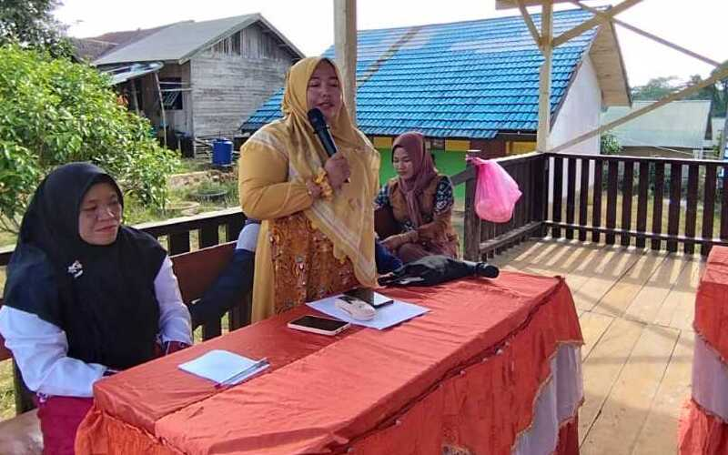

Pentas seni sekolah merupakan salah satu kegiatan yang
sangat dinantikan oleh siswa, guru, dan orang tua.
Kegiatan ini bukan hanya sebagai ajang untuk menampilkan
bakat dan kreativitas siswa, tetapi juga sebagai sarana
untuk mempererat hubungan antarsiswa

Indonesia juga dikenal dengan berbagai festival budaya
yang meriah dan penuh warna. Festival-festival ini tidak
hanya menampilkan seni dan budaya lokal tetapi juga
menjadi ajang untuk mempererat persaudaraan dan menjaga
tradisi.

Pentas seni merupakan wadah bagi siswa untuk
mengeksplorasi dan mengembangkan bakat mereka di berbagai
bidang seni. Ini bisa menjadi awal dari karir mereka di
bidang seni.

Pakaian adat Indonesia bukan hanya sekadar pakaian, tetapi
juga simbol identitas dan kekayaan budaya yang diwariskan
dari generasi ke generasi. Setiap pakaian adat memiliki
cerita dan makna tersendiri, mencerminkan keanekaragaman
budaya yang ada di Indonesia
❮
❯
PENTAS SENI BUDAYA P5M SMPN 1 PULAU SEBUKU
Written by :
Husni Juni-2024
Pentas seni budaya Indonesia adalah cerminan dari kekayaan dan
keberagaman bangsa. Melalui tarian, musik, teater, dan festival,
budaya Indonesia terus hidup dan berkembang, memukau dunia dengan
keindahan dan kedalamannya. Dengan terus melestarikan dan
mengembangkan seni budaya ini, Indonesia tidak hanya menjaga
warisan leluhurnya tetapi juga membangun identitas budaya yang
kuat dan dinamis di panggung dunia. ndonesia, dengan lebih dari
17.000 pulau dan ratusan suku bangsa, merupakan salah satu negara
dengan kekayaan budaya yang paling beragam di dunia. Keberagaman
ini tercermin dalam pentas seni budaya yang mempesona dan memukau
baik masyarakat maupun mancanegara. Pentas seni budaya Indonesia
adalah perwujudan dari warisan leluhur yang terus hidup dan
berkembang seiring dengan inovasi modern. Artikel ini akan
membahas beberapa aspek penting dari pentas seni budaya Indonesia,
mulai dari tarian tradisional, musik, teater, hingga festival
budaya.
Pentas seni sekolah merupakan salah satu kegiatan yang sangat
dinantikan oleh siswa, guru, dan orang tua. Kegiatan ini bukan
hanya sebagai ajang untuk menampilkan bakat dan kreativitas siswa,
tetapi juga sebagai sarana untuk mempererat hubungan antarsiswa
serta antara siswa dan guru. Dalam artikel ini, kita akan membahas
pentingnya pentas seni sekolah, berbagai jenis pertunjukan yang
 biasanya ditampilkan, serta manfaat yang didapat dari
penyelenggaraan kegiatan ini. Pentingnya Pentas Seni Sekolah
Pentas seni di sekolah memiliki banyak peran penting dalam
pengembangan karakter dan keterampilan siswa. Berikut adalah
beberapa alasan mengapa pentas seni sekolah sangat penting:
Pengembangan Kreativitas: Pentas seni memberikan kesempatan bagi
siswa untuk mengekspresikan diri melalui berbagai bentuk seni
seperti tari, musik, drama, dan seni rupa. Hal ini dapat membantu
mengasah kreativitas dan imajinasi mereka.
biasanya ditampilkan, serta manfaat yang didapat dari
penyelenggaraan kegiatan ini. Pentingnya Pentas Seni Sekolah
Pentas seni di sekolah memiliki banyak peran penting dalam
pengembangan karakter dan keterampilan siswa. Berikut adalah
beberapa alasan mengapa pentas seni sekolah sangat penting:
Pengembangan Kreativitas: Pentas seni memberikan kesempatan bagi
siswa untuk mengekspresikan diri melalui berbagai bentuk seni
seperti tari, musik, drama, dan seni rupa. Hal ini dapat membantu
mengasah kreativitas dan imajinasi mereka.
Peningkatan Kepercayaan
Diri: Berpartisipasi dalam pentas seni dapat meningkatkan
kepercayaan diri siswa. Dengan tampil di depan umum, siswa belajar
untuk mengatasi rasa takut dan gugup, serta menjadi lebih percaya
diri dalam menunjukkan bakat mereka. Kerjasama dan Kekompakan:
Persiapan pentas seni melibatkan kerja sama antaranggota tim.
Siswa belajar untuk bekerja sama, menghargai pendapat orang lain,
dan menyelesaikan masalah bersama, yang sangat bermanfaat untuk
pengembangan keterampilan sosial mereka. Penghargaan Terhadap Seni
dan Budaya: Melalui pentas seni, siswa dapat lebih mengenal dan
menghargai berbagai bentuk seni dan budaya, baik dari daerah
mereka sendiri maupun dari berbagai daerah lain di Indonesia.
 Indonesia adalah negara yang kaya akan budaya dan tradisi, dengan
lebih dari 300 suku bangsa yang tersebar di berbagai pulau. Salah
satu aspek budaya yang paling menonjol adalah pakaian adat. Setiap
daerah memiliki pakaian adat yang unik dan khas, mencerminkan
kekayaan budaya serta nilai-nilai yang dianut oleh masyarakat
setempat. Dalam artikel ini, kita akan menjelajahi beberapa
pakaian adat dari berbagai daerah di Indonesia dan makna yang
terkandung di dalamnya.
Indonesia adalah negara yang kaya akan budaya dan tradisi, dengan
lebih dari 300 suku bangsa yang tersebar di berbagai pulau. Salah
satu aspek budaya yang paling menonjol adalah pakaian adat. Setiap
daerah memiliki pakaian adat yang unik dan khas, mencerminkan
kekayaan budaya serta nilai-nilai yang dianut oleh masyarakat
setempat. Dalam artikel ini, kita akan menjelajahi beberapa
pakaian adat dari berbagai daerah di Indonesia dan makna yang
terkandung di dalamnya.
Pada kesempatan ini juga telah ditampilkan
pakaian adat banjar. Pakaian adat Banjar adalah salah satu
kekayaan budaya Indonesia yang harus dilestarikan dan dihargai.
Setiap helai kain dan setiap motif yang terukir pada pakaian
tersebut menyimpan cerita dan nilai-nilai luhur yang diwariskan
dari generasi ke generasi. Dengan mengenal dan menghargai pakaian
adat Banjar, kita tidak hanya melestarikan warisan budaya tetapi
juga memperkaya identitas nasional Indonesia.
Makna dan Filosofi
Pakaian adat Banjar tidak hanya indah secara visual, tetapi juga
sarat dengan makna dan filosofi. Misalnya, penggunaan warna cerah
dalam baju pengantin mencerminkan kebahagiaan dan keberuntungan.
Motif dan hiasan pada pakaian adat sering kali mengandung
simbol-simbol tertentu yang menggambarkan keagungan, kesucian, dan
kehormatan.